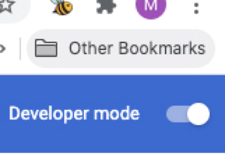
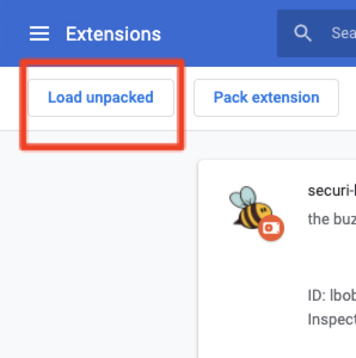
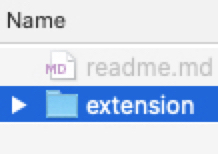

The securi-bee extension can help you improve your web security practices as you browse. It consists of two main tools: an information tracking tool and a password strength tool. The information tracking tool can help you learn what kind of information the sites you visit are collecting about you. The password strength tool can help you verify that your passwords follow basic password security guidelines.
| 1. Visit our GitLab repo and download and unzip the extension zip file. | |
| 2. Download Google Chrome, if you don’t already have it, and open the browser | |
|  | 3. Visit chrome://extensions/ and ensure that the "Developer mode" checkbox in the top right-hand corner is checked |
|  | 4. Click "Load unpacked" button and navigate to the folder you downloaded from GitLab |
|  | 5. Select the inner folder called “extension” |
| 6. Click the Chrome Extensions puzzle piece icon in the upper right hand corner of Chrome, find securi-bee, and click on the thumbtack icon to pin the extension to your Chrome browser view | |
|
7. Click on the securi-bee icon to use the extension! |

loading the buzz . . .